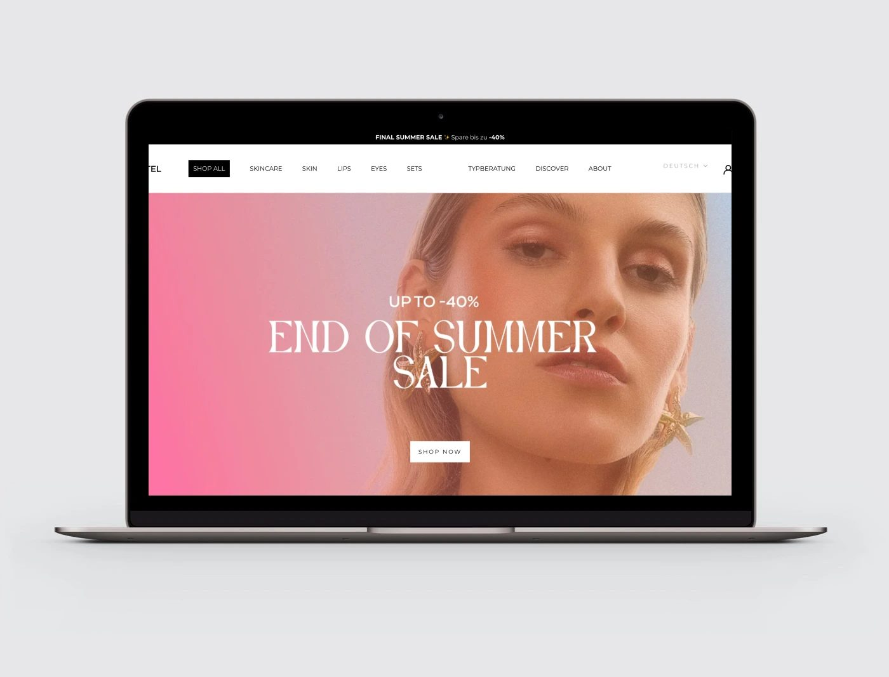
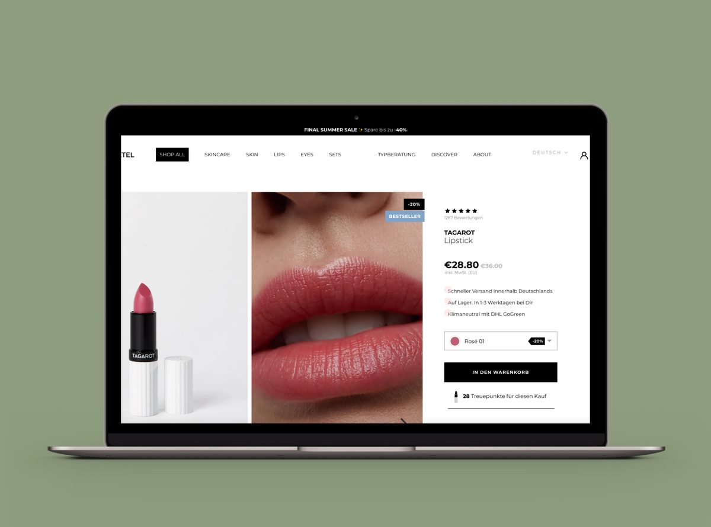
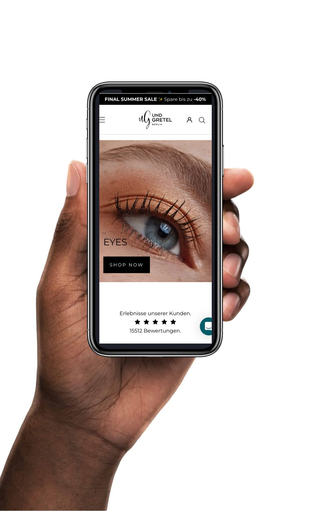
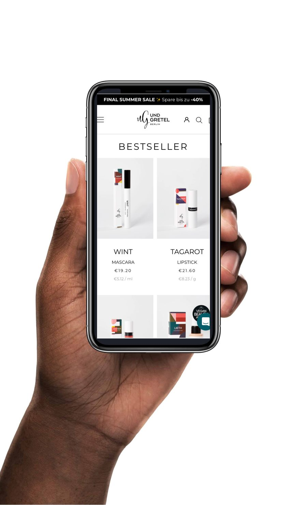
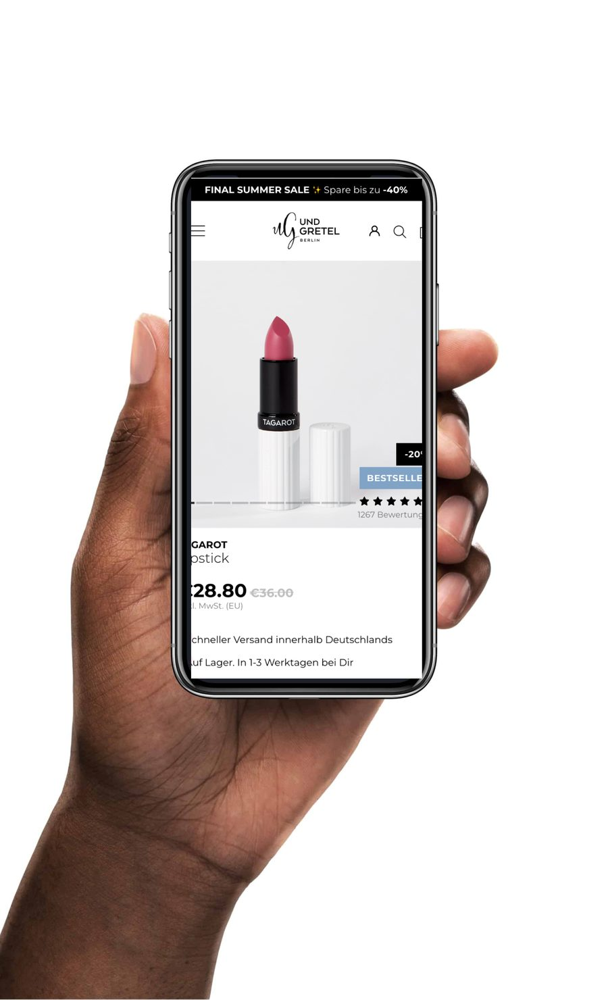
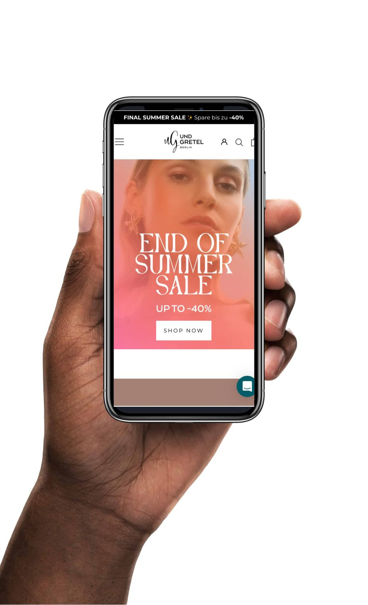

Case Study
Conversion Engine
Optimising checkout, product pages, and launch strategy from inside the team
Visit live site ↗
A direct-to-consumer brand with healthy traffic but underperforming conversion. As shop manager and developer, I owned the full e-commerce operation — from product launches and shop optimisation to A/B testing and checkout improvements.
The opportunity
Paid traffic was converting below category benchmarks, but the team had been treating symptoms without diagnosis — each fix was a guess. The checkout, product detail pages, and mobile experience all had friction, but without structured measurement it was impossible to tell which changes would actually move revenue.
The approach
I combined session recordings and heatmaps with a full funnel teardown — from ad landing to order confirmation — to identify where buyers were actually dropping off versus where the team assumed they were. Rather than auditing from outside and handing over recommendations, I prioritised findings by expected lift versus effort and owned the implementation directly: shipping fixes, setting up A/B tests to validate higher-risk changes before full rollout, and managing product launches alongside the ongoing optimisation work.
What shipped
A systematic programme of improvements spanning checkout form design, shipping-cost transparency, and mobile PDP layout — prioritised, tested, and deployed. Three A/B tests validated the highest-risk changes before full rollout. New product launches were integrated into the optimisation cycle, each one informed by what the data was showing about user behaviour on existing pages.
The impact
Checkout abandonment and mobile bounce both improved within the first month of the priority fixes going live. More importantly, the shop moved from gut-feel fixes to a repeatable optimisation process — structured measurement, prioritised backlog, test-before-commit — that continued producing gains beyond the initial round of changes.




